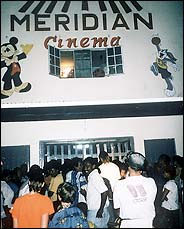

|


|

|
September 5, 2003 Fiji Favorites: Guys in Dresses By DAVE KEHR
The Piersons are back, and the New York independent film community is happy to see them home.

"The old action heroes haven't died in Fiji," Mr. Pierson reported over cappuccino in a West Village cafe. "Stallone is still huge, Steven Seagal is still huge, and they love Chuck Norris." But the highlight in this experiment in bringing American movies to the edge of the world was seeing the Three Stooges.
The theater, founded in the 1950's by an Indian entrepreneur, had its own print of the 1941 short "Some More of Samoa," in which the Stooges visit a back lot South Pacific. Despite the film's politically incorrect depiction of island culture - the natives pop Curly into a big pot and try to boil him for dinner - Taveuni Islanders have been enjoying it literally for generations. The wild delight, Mr. Pierson said, began with the appearance of the Columbia logo.
"The trip was supposed to be for a book or some sort of long essay," Mr. Pierson said, "about a place that was beyond the media's reach, where the movie theater was the only entertainment, aside from church. It's an outpost where movies have stayed No. 1 to everything. You don't have to deal with all the other distractions, like in the very, very wired world of America."
Instead it became a documentary, with Mr. Smith as executive producer and Steve James, best known for the 1994 film "Hoop Dreams," as director. After sharing the Pierson family's last month on the island, Mr. James returned to Chicago with 100 hours of tape, which he is editing for eventual release by Miramax.
"Every movie basically competes on its own terms," Mr. Pierson said of the reception at the 180 Meridian Cinema. " 'Pearl Harbor' isn't coming in with 17 international magazine covers pushing it, or three fake documentaries about the making-of. It's just another movie off the ferry, which means that movies that may have bombed out in America can do fine."
"I'm sure that we had the most successful run of `Sorority Boys' in the world," Mr. Pierson noted, referring to 2002 film about three male college students who don drag to live in a sorority house. "It's actually pretty funny, but more important, in that culture they just seem to love men dressing as women. Anytime a man dresses as a woman - even Will Smith in the horrible `The Wild, Wild West' - they just love it."
Janet Pierson added: "It was so much fun to watch it in that setting because they're a really expressive audience. They make a lot of noise."
|